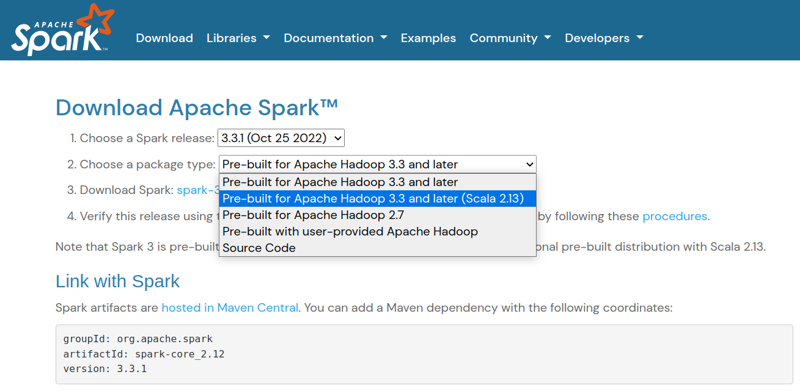
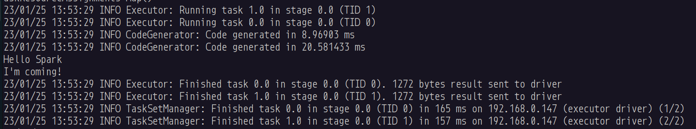

用 sbt 建立 Spark 專案
Spark 是一個用 Scala 語言開發，運行在 JVM 上的一個資料處理、機器學習框架，本文是參考 Spark 開發：VSCode 與 sbt 一文操作時，發現 Spark 的問題，並處理完後，彙整之完整流程。
準備 Spark 環境
在本文中，我們使用 Scala 2.13.x 的版本，因此，到 Spark 網站下載時，需要下載 Scala 2.13 版的 Spark (Spark 預設是用 Scala 2.12 編譯，若要使用 2.13，必須下載另一個版本)，畫面如下：

下載回來後，解壓縮完，本文預設放置在 /opt/spark 下，並設定好 PATH 至 /opt/spark/bin 及 /opt/spark/sbin
建立基本專案
建立基本專案的過程，本文使用 sbt template 中，最簡單的 hello-world，執行如下：
sbt new scala/hello-world.g8
執行後，給專案一個簡單的名字，如 Hello Spark，我們就能得到一個很基本的 Scala 專案，接著，我們要稍微調整一下 sbt 的建置檔：
scalaVersion := "2.13.10" // 1. 從 2.13.8 改為最新的 2.13.10
name := "hello-spark" // 2. 從 hello-world 改為 hello-spark
organization := "ch.epfl.scala"
version := "1.0"
libraryDependencies += "org.scala-lang.modules" %% "scala-parser-combinators" % "1.1.2" // 3. 從 2.1.1 改為 1.1.2
libraryDependencies += "org.apache.spark" %% "spark-core" % "3.3.1" // 4. 加入 Spark 的套件
libraryDependencies += "org.apache.spark" %% "spark-sql" % "3.3.1"
建立 Hello Spark 訊息
如同參考的文章，我們一樣寫了一段簡單的訊息：
import org.apache.spark.sql.{SparkSession, Row, types => T}
import org.apache.log4j.{Logger, Level}
object Main extends App {
Logger.getLogger("org").setLevel(Level.ERROR)
val spark = SparkSession
.builder()
.appName("hello-spark")
.master("local[2]")
.getOrCreate()
val data = List("Hello Spark", "I'm coming!")
val msgDF = spark.createDataFrame(
spark.sparkContext.makeRDD(data.map(x => Row(x))),
schema = T.StructType(Array(T.StructField("msg", T.StringType)))
)
msgDF.foreach((row: Row) => println(row.getAs("msg")))
}
編譯、執行
編寫完了之後，我們到 command line 下，執行：
sbt clean package
如此一來，在 target/scala-2.13 下，就會有我們剛剛編譯完的 jar 檔：hello-spark_2.13-1.0.jar
接著，使用 spark-submit 來執行：
spark-submit target/scala-2.13/hello-spark_2.13-1.0.jar
我們就能看到執行的結果：
